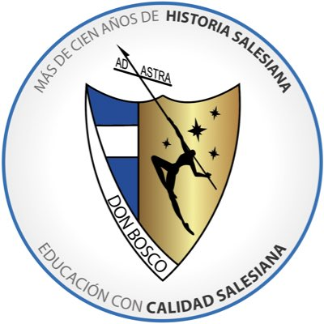

Subtitulo
IDENTIDAD EDUCATIVA DEL COLEGIO DON BOSCO Y CENTRO ESCOLAR CATÓLICO SAN JUAN BOSCO El proyecto Educativo es el instrumento operativo que guía la realización de la Pastoral Juvenil Salesiana según las diversas situaciones y contextos en los cuales viven los jóvenes, y orienta cada iniciativa y recurso hacia la evangelización.